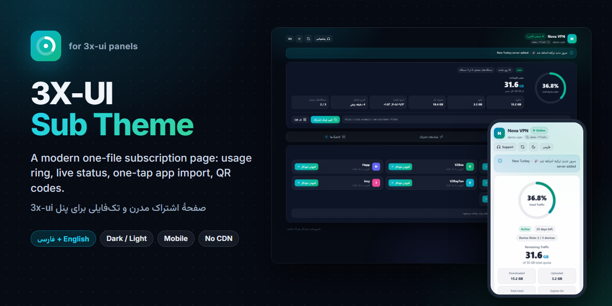
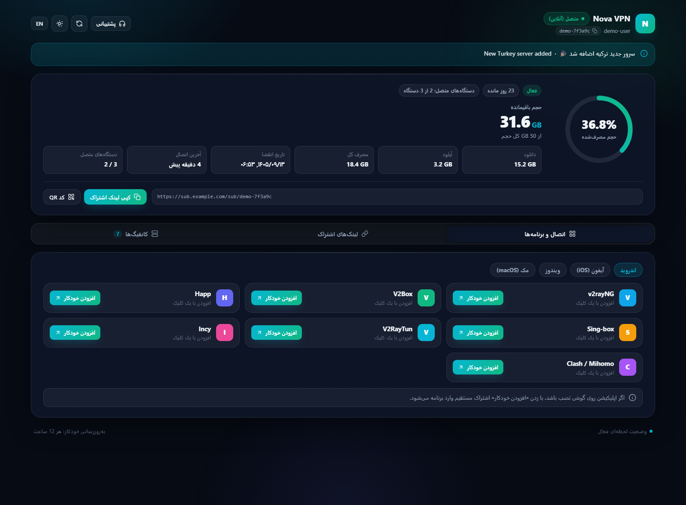
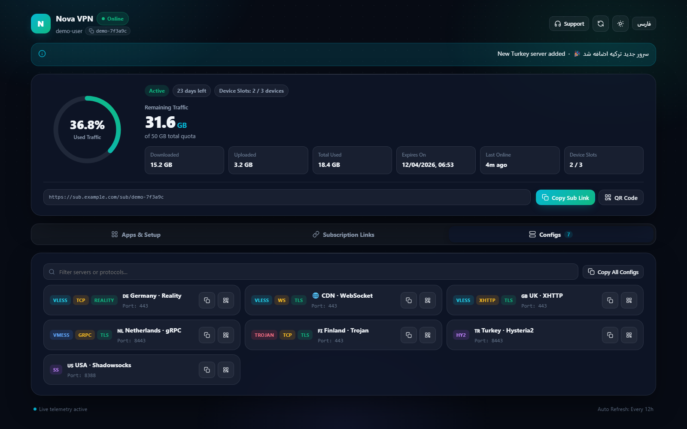
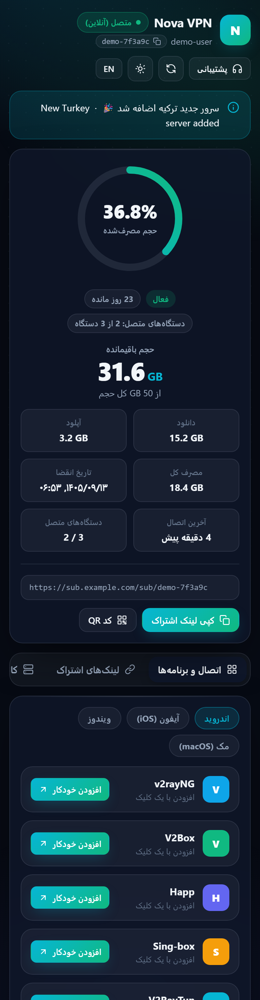
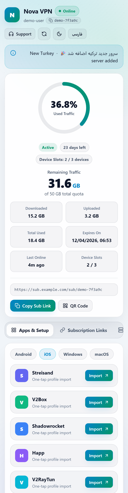

صفحهی اشتراک مدرن برای 3x-ui
A modern subscription page for 3x-ui
یک فایل HTML که جای صفحهی اشتراک پیشفرض پنل را میگیرد: حلقهی مصرف، وضعیت زنده، افزودن با یک لمس به برنامههای VPN و کد QR. فارسی و انگلیسی، تیره و روشن، رایگان و متنباز.
One HTML file that replaces the panel's default subscription page: usage ring, live status, one-tap import into VPN apps, QR codes. Persian + English, dark + light, free and open source.

ویژگیها
Features
مصرف در یک نگاه
Usage at a glance
حلقهی درصد مصرف، حجم باقیمانده، دانلود و آپلود، تاریخ انقضا، روزهای مانده و آخرین اتصال.
Used-percentage ring, remaining traffic, download and upload, expiry date, days left and last online.
وضعیت زنده
Live status
تا وقتی صفحه باز است هر ۱۵ ثانیه از خود پنل تازه میشود؛ نشان آنلاین و تعداد دستگاهها (HWID).
Refreshes from the panel every 15 seconds while open; online badge and device slots (HWID).
افزودن با یک لمس
One-tap import
v2rayNG، V2Box، Happ، Sing-box، V2RayTun، Incy، Streisand، Shadowrocket، Clash و v2rayN؛ سیستمعامل خودکار انتخاب میشود.
v2rayNG, V2Box, Happ, Sing-box, V2RayTun, Incy, Streisand, Shadowrocket, Clash and v2rayN; the platform is picked automatically.
کانفیگها و QR
Configs and QR
همهی کانفیگها با برچسب پروتکل، جستجو، کپی و QR. لینک اصلی، JSON و Clash.
Every config with protocol tags, search, copy and QR. Main, JSON and Clash links.
بدون درخواست بیرونی
No external requests
بدون CDN و فونت آنلاین؛ QR داخل خود صفحه ساخته میشود. روی شبکههای فیلترشده هم کار میکند.
No CDN, no web fonts; QR codes are made in the page. Works on filtered networks too.
دست به پنل نمیزند
Panel stays untouched
از تنظیم داخلی «پوشه قالب صفحه اشتراک» خود 3x-ui استفاده میکند؛ برنامههای VPN همان اشتراک معمولی را میگیرند.
Uses 3x-ui's own "Sub Theme Directory" setting; VPN apps still get the normal subscription.
تصاویر
Screenshots




دموی زنده (دادهی ساختگی)
Live demo (fake data)
دمو را در صفحهی کامل هم میتوانید باز کنید. دکمهها در دمو به سروری وصل نیستند.
You can also open the demo full page. The demo's buttons are not connected to a server.
نصب
Install
۱. فایل را روی سرور بگذارید
1. Put the file on the server
mkdir -p /etc/x-ui/sub-theme curl -fsSL -o /etc/x-ui/sub-theme/sub.html https://github.com/Plus98ir/3X-UI-Sub-Theme/releases/latest/download/sub.html
اگر GitHub روی سرور باز نمیشود، فایل را روی کامپیوتر دانلود کنید و با scp sub.html root@SERVER:/etc/x-ui/sub-theme/ آپلود کنید.
If GitHub is blocked on the server, download the file on your PC and upload it with scp sub.html root@SERVER:/etc/x-ui/sub-theme/.
۲. در پنل
2. In the panel
- 3x-ui نسخهی 3.10.0 یا جدیدتر، با سرویس اشتراک روشن.
- تنظیمات ← اشتراک ← پوشه قالب صفحه اشتراک را
/etc/x-ui/sub-theme/بگذارید و ذخیره کنید. - لینک اشتراک یک کاربر را در مرورگر باز کنید.
- داکر: فایل را در
./db/sub-theme/sub.htmlروی سرور بگذارید (volume معمول./db/:/etc/x-ui/).
- 3x-ui v3.10.0 or newer, with the subscription service on.
- Set Settings → Subscription → Sub Theme Directory to
/etc/x-ui/sub-theme/and save. - Open any client's subscription link in a browser.
- Docker: put the file in
./db/sub-theme/sub.htmlon the host (usual./db/:/etc/x-ui/volume).
این قالب غیررسمی است و جزو پروژهی 3x-ui نیست. برای برگشت به صفحهی پیشفرض، همان تنظیم را خالی کنید.
This is an unofficial template, not part of the 3x-ui project. Clear the same setting to go back to the default page.